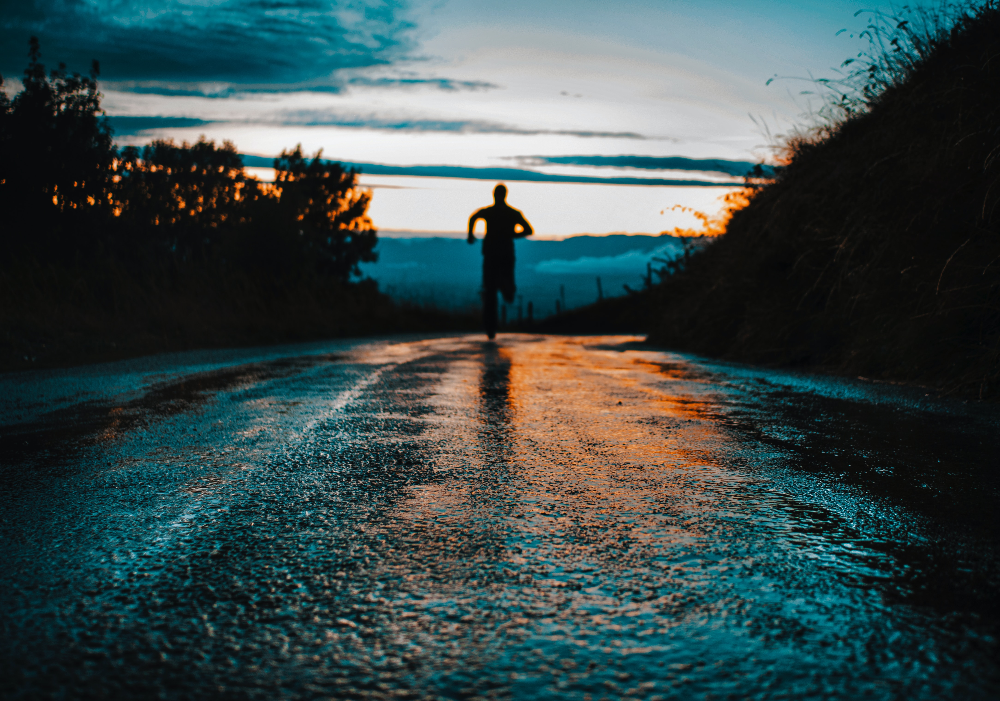
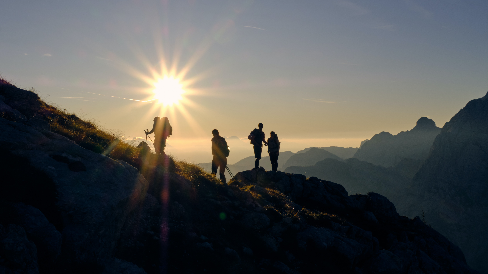

Running is a life long journey, it is an integral part of my life it has given me a lot more than I ever expected.
Like every new runner when I began running it drained me physically and challenged me mentally ,whichever sports you play when you take up running it’s a bit different it demands a lot from you and makes sure it gives you everything back in return. This sport constantly knocks you down mentally, physically and emotionally, if you find your way to pick yourself up and keep going. You have won even without crossing the finishing line. I took this up to be physically fit but running has given me a lot more than good health and fitness.
It has taught me consistency and Consistently Good Enough Beats Occasionally Great always. In the world full of chaos it gives me peace, it is an uninterrupted times of the day that I have to myself, free from distractions , it is active meditation on pavements and so after each run I am ready to focus on something new. It helps me clear all my worries which I have collected throughout the day.
My strava account For me, walking gives me the opportunity to discover things in the world that fascinate me while at the same time I am nurturing my mental and physical health. I love walking with people who enjoy good conversation, and a bit of adventure. I enjoy taking a few moments to take videos and photos of animals and flora.
A good hike should be enjoyed and not rushed. If you take your time to absorb your surroundings you will end up creating a library of beautiful memories and a sense of peace that seeps naturally into your daily life.
